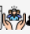
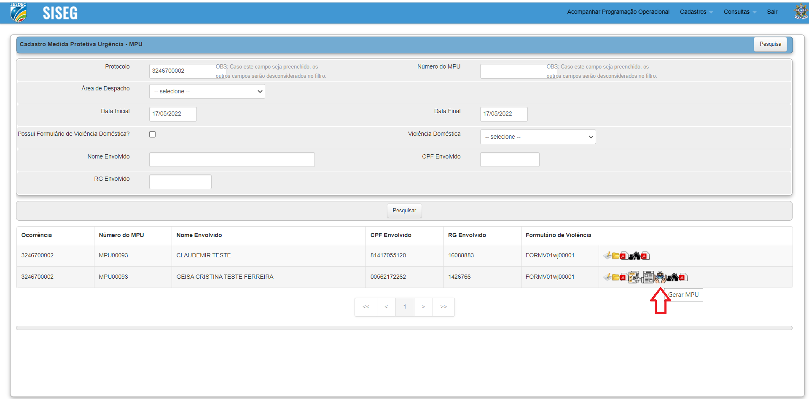
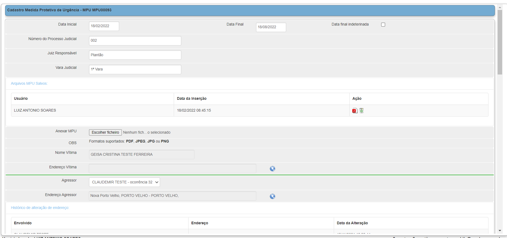
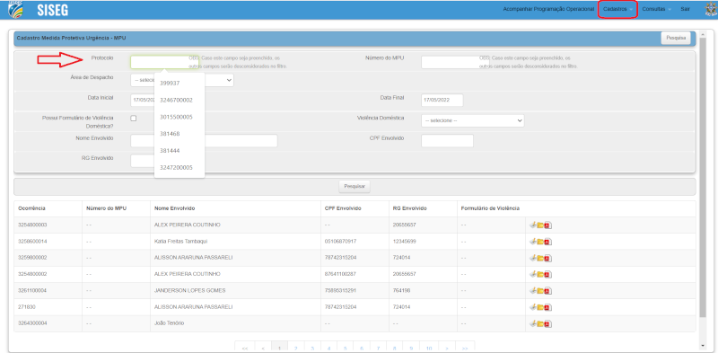

Cadastro de MPU - SISEG
Para cadastrar a Medida Protetiva de Urgência - MPU no SISEG se faz necessário que haja uma ocorrência vinculada.
- Acesso ao Sistema SISEG
- Checar as informações da MPU
- Checar se possui endereço e/ou contato telefônico
- Iniciar Processo na aba PM-CASNUPEVIDPMP
- Inserir documento
- Gerenciar Marcador / Etiqueta
- Incluir em bloco
- Acessar a unidade que o processo foi enviado
Criar Ocorrência no SISEG
- Utilizando a senha do perfil MPU acessar o SISEG
- Após acessar o menu CADASTROS - Opção Medida Protetiva de Urgência
- Após localizar a ocorrência e clicar no ícone Gerar MPU  
- Realizar o preenchimento de todos os campos da tela seguinte, com os dados da Medida Protetiva e anexar o arquivo em PDF. 

* Realizar a pesquisar pelo PROTOCOLO da ocorrência.
Inicio